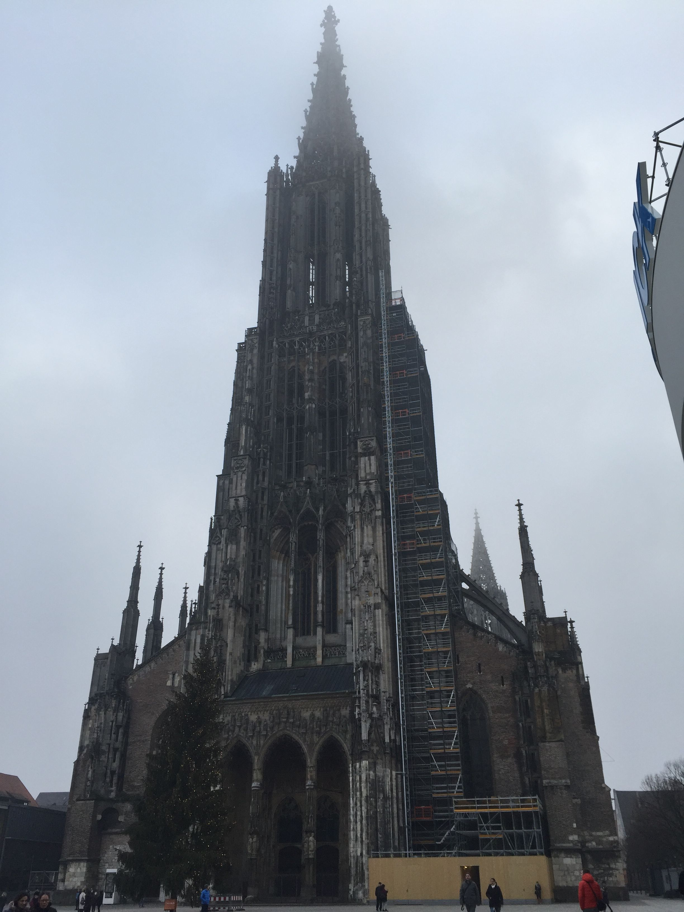
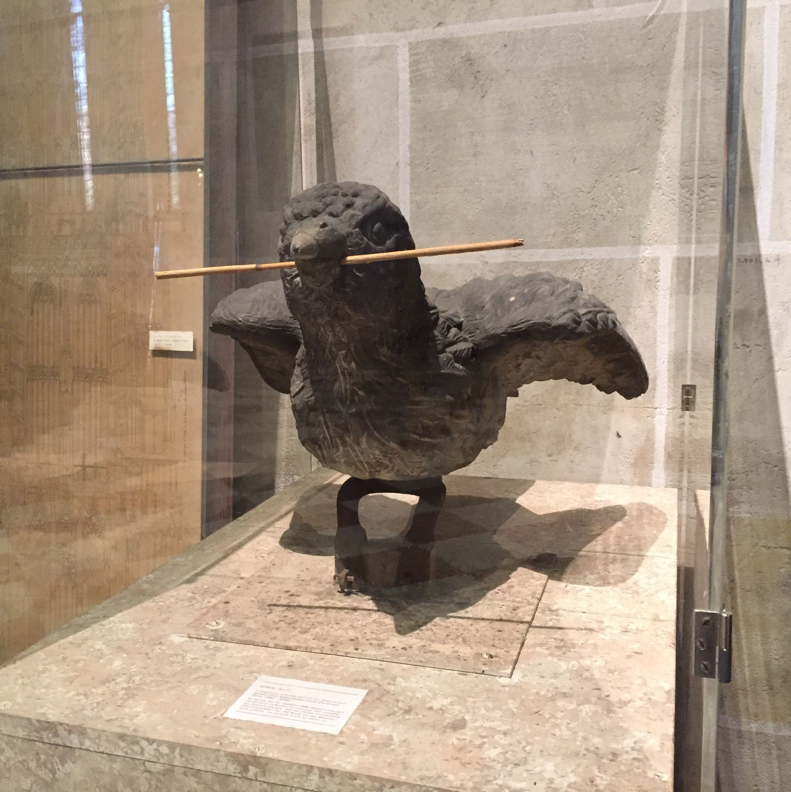

Impossible to imagine Ulm without his gothic spire of Ulm Minster – the symbol of the town has epithet “the finger of God”. The height of Ulm Minster, the highest Christian church in the World, is 161, 53 meters, coming over Cologne Cathedral (Kölner Dom), which is 157 meters high.
In Ulm Minster, visitors can rise up to 146 meters by 768 steps of stony spiral stairs. A great view of Ulm and its neighbourhood opens from the observation deck on the top: the Town hall, the old town walls, fishermen’s quarter, Ulm museum, library glass roof, Danube, market square and green landscapes.
Construction of Ulm Minster, financed by the townsfolk, was started in 1377 as a three-aisled hall church with three towers. But the architect Ulrich von Ensingen decided to change it for a five-aisled basementless church with the highest tower of the Christian West.
The construction of the building lasted five hundred years and ended in 1890. During the constructing, the Cathedral converted from Roman Catholicism into Lutheranism but remained richly decorated in the spirit of architecture typical for Catholic Churches: wall painting and stained-glass windows with iconographic scenes, the pulpit with cover made from lime, five organs and gothic statues of saints, particularly statue of Christ made by the German sculptor Hans Multscher.
The episcopal chair in the form of the triple seat (1468), reading desk on the west side and chairs for parishioners from dark oak (1469-1474) made by Jörg Syrlin – the well-known German sculptor, are the representative of the late Gothic of medieval art. Ensemble of chairs for parishioners is especially noteworthy. One row was designed for men and the other for women. All saints and sibyls were divided into two parts, masculine figures on the north side and female figures on the south side. All figures are opposite one another as if they are in a dialogue. Among philosophers, Pythagoras is playing a lute, Terence is glorious of his virtue, Virgil – an ancient Roman poet, had a respect and magic reputation in the Middle Ages, thanks to his Eclogues which describes the birth of a boy ushering in a golden age as a prediction of Jesus' birth, Ptolemy is an expert of astronomy with an armillary sphere.
It is interesting to note that Ulm Minster was called Minster because of its size, in truth, it has a status of a town church. Bishop’s residence of Württemberg is located in Stuttgart. For citizens and tourists the glory and meaning do not depend on its official status.
The famous symbol of Ulm is a sparrow – Ulmer Spatz. Original sculpture of Ulmer Spatz with a straw in its nib, dated 1858, that was installed on the cathedral roof, you can see in a glass-case in the Minster interiors. Its place on roof was taken by a copy made of sandstone.
Legend has it that, the inhabitants of Ulm needed a particularly large beam for the construction of Ulm Minster, but could not get it through the city gate. As they were about to tear the gate down, they noticed a sparrow carrying a straw for its nest; which turned it from crosswise to lengthwise in its beak. Realization dawned on the people of Ulm, who have ever since placed long loads along rather than across their carts. The legend is first recorded in an 1842 poem by Carl Hertzog. (Source Wikipedia.org )
A few years ago in Ulm there was an organised fund raising auction for the restauration of Ulm Minster. Figures of the Ulm sparrow were put up for sale and their new owners were able to decorate them and set up in different places. Now every tourist can buy souvenirs in the form of the Ulm sparrow and Ulm Minster.
Google Maps